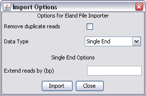

Eland produces several different file formats, but the ones you need to load data into SeqMonk are the _export.txt or _sorted.txt files. These both have the same format, but the sorted file has undergone additional filtering to the export file.
Because the Eland format is well defined you don't need to specify much information to import your data.

There are no Eland specific options so you will just see the common options for both single and paired end data.
If you have done a paired end run you will have two sorted or export files. If you want to import your data as a single end run then you will need to select both files and then combine the results in a data group once you've imported them. If you want to do a paired end import then you only need to select one of the files (it doesn't matter which one). If you select them both you will end up with the same regions imported twice.